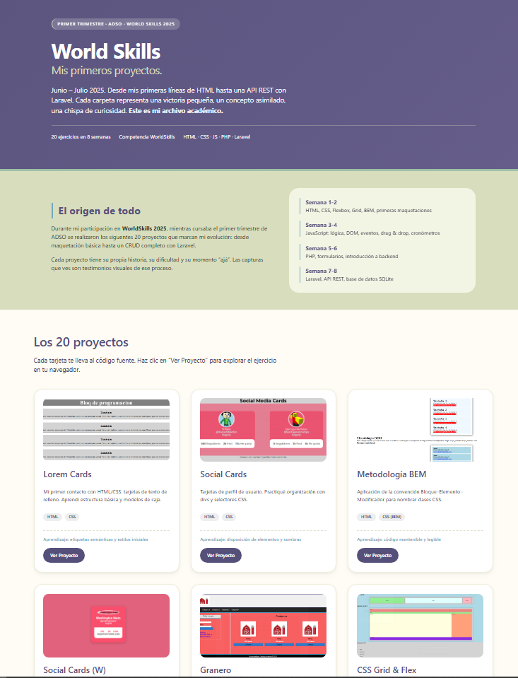
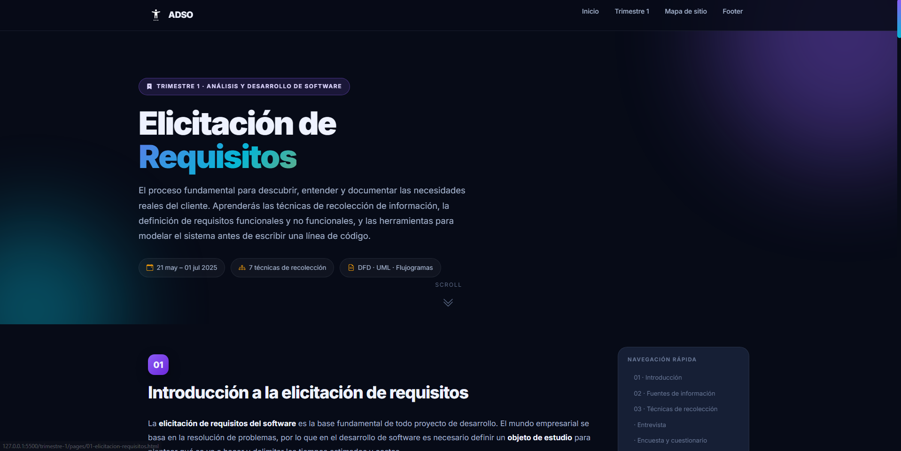
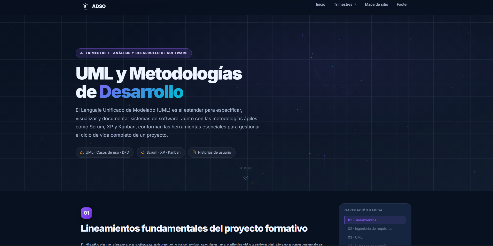
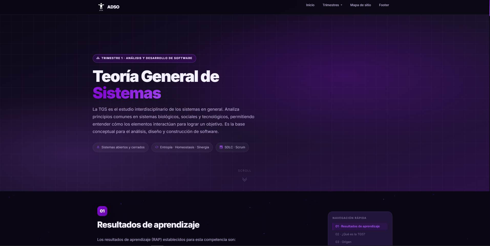
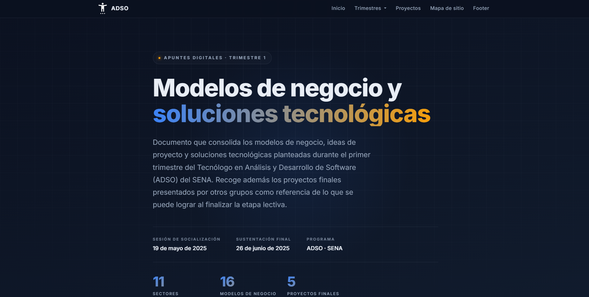

World Skills
00 · World Skills
Sitio web del proyecto World Skills, donde se documentan las competencias, actividades y retos desarrollados en el marco de las habilidades técnicas.
Abrir sitioFundamentos del análisis de requisitos, modelado con UML, bitácora de aprendizaje y teoría general de sistemas. Primeros pasos en el mundo del desarrollo de software.
Se exploran las bases del análisis de software: cómo elicitar requisitos, documentar con UML, mantener una bitácora de aprendizaje y comprender los sistemas desde una perspectiva teórica.
Explora los cuatro módulos teórico-prácticos que componen el primer trimestre del Tecnólogo en Análisis y Desarrollo de Software.

Sitio web del proyecto World Skills, donde se documentan las competencias, actividades y retos desarrollados en el marco de las habilidades técnicas.
Abrir sitio
Documento base del trimestre con fuentes de información, técnicas de recolección, entrevistas, encuestas, diagramas de flujo, DFD, UML y un ejemplo práctico.
Ver proyecto
Introducción al lenguaje unificado de modelado: diagramas de clases, casos de uso, secuencia y actividad para representar sistemas de software.
Ver proyecto
Fundamentos de la TGS: concepto de sistema, subsistemas, entradas y salidas, retroalimentación y su aplicación al análisis de software.
Ver proyecto
Modelos de negocio, ideas de proyecto y soluciones tecnológicas planteadas durante el primer trimestre: sectores agropecuario, salud, textil, logística, comercio, financiero, educación, automotriz, ganadero, mascotas y ambiental.
Ver proyecto